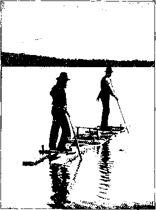
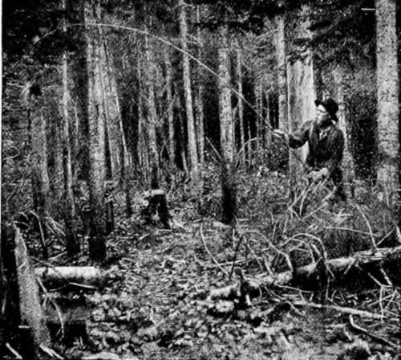

Sport In An Untouched American Wilderness. Part 4
Description
This section is from the book "Hunting", by Archibald Rogers. Also available from Amazon: Hunting.
Sport In An Untouched American Wilderness. Part 4
The following year, under somewhat similar circumstances, a single bullet killed another moose in his tracks.
Our second hunting-trip, in the fall of 1895, was in the Bald Mountains, considerably farther north. In this region there are fewer moose, but more caribou. It is considerably easier of access than the Little Southwest Lake country. One can either go up the Nepisiguit River from Bath-urst, or up the Northwest Miramichi from Newcastle. If he goes up the latter stream he cannot use a birch-bark canoe, on account of the extreme roughness of the upper waters. In order to reach the limit of navigation, the canoemen will be compelled to drag the boat over many miles of shallow bars, wading in the cold water. This they cheerfully do, however, for a dollar and a quarter per day.
For us, the passengers, there was nothing but comfort. My companion on this trip was a slender boy of fourteen, who had never before been outside of the brick walls of a city, and who had never seen anything wilder than an English sparrow, except in the cages of the zoological garden. Some of his friends who did not know about such things thought it a foolhardy thing to let him go into the wilderness, a hundred miles from anywhere. They did not know what a luxurious place it is. On the way into the hunting-ground all he had to do was to sit in the centre of the big canoe, and watch the ever-changing panorama of the stream. He took to sleeping in an open tent, before a big fire, as naturally as though it had been his habit throughout life. I had a little 22-calibre rifle for the benefit of the partridges; and in a week this boy, who had never before fired a gun, could shoot almost as well as I could. The only trouble was, he was not strong enough to hold a big ten-pound 45-calibre rifle steady. He had trout and partridges whenever he wanted them to eat, and plenty of civilized food besides, for we had an excellent cook.
The second day after we got up into the mountains Braithwaite and I started on a long tramp, while the boy, who was not equal to so severe a journey, remained at the camp to re-enforce the cook as home-guard. The guide and myself early in the day saw a large bunch of caribou on the farther side of a wide valley; and after climbing around the rocks for two or three miles, to avoid their winding us, we lost sight of them entirely. Disgusted at our ill-fortune, we started back for the stream to "boil the kettle" for a midday lunch, and, on our way there, walked right in amongst the caribou, which were lying down. It was a surprise on both sides; and the caribou, of which we counted sixteen, fairly climbed over each other in their efforts to escape. After three or four wild shots I had the good luck to stop the big bull of the herd.
On a Raft in Louis Lake.
The next day Duncan, the cook, and Herbert, the boy, took the canoe, and went after the caribou's head and hide; and, much to our surprise, came back with two pairs of antlers instead of one.
They reported that they had seen twenty-six caribou, too far away to follow, high up on the mountain-side; but when they reached the place by the side of the stream where we told them we had left the caribou we had shot the day before, they found a lonesome bull standing within one hundred feet of his dead companion; and Herbert, who had begged the privilege of taking the big rifle along in the canoe, had shot the animal as neatly as though it had been a bull-partridge instead of a bull-caribou, though the recoil of the rifle nearly knocked the breath out of him.
Fishing for Grouse.
The number of unmapped lakes in New Brunswick is very great. The guides are constantly discovering new ones. Many of them are mere ponds, but some of them are beautiful sheets of water two or three miles across.
These undisturbed waters are a summer paradise for the loons, whose discordant voices can be heard on any quiet day. I asked an Indian once how many lakes he thought there were within a day's travel of the place where we were camped. His reply was: "Oh, don't know; supposem five hundred."
The guides, by the way, believe that the loon cannot be shot, except by building a fire on the shore, and shooting through the smoke, as they think the loon dives at the flash of the rifle.
One day we began wantonly firing at a loon with the 22-calibre. Every time one of us would shoot, the bird would dive, and remain down a long time. Finally we took a raft which we had made for fishing purposes, and pushed out to the centre of the little lake. By watching carefully we could shoot quickly enough to keep the loon under water, and soon it began to show signs of being short of breath. But we marvelled at the great distance that it could swim. Sometimes it would come up a hundred and fifty yards on one side of the raft, and the next time two hundred yards on the other side. Finally it came up close to the raft, and my companion killed it. As we were pushing out to pick it up, we suddenly saw another loon come up on the other side. Without knowing it, we had been keeping two loons under water, supposing all the time there was only one. In order to make a complete job of it, we continued the same tactics as to the remaining one, and soon it too was so short of breath that it had to rise at very frequent intervals.
In two or three minutes it was a shot bird. We hung these two relentless enemies of the trout at the front of the tent; and when the men came back at night they were greatly surprised at the shattering of their traditions.
Another time we saw an old loon, with a young one sitting on her back. When we paddled toward her she dived, leaving the fluffy little fellow on the surface. He could not go under. It was an easy thing to pick him up. After being in the canoe a minute or two, on replacing him in the water, he swam fearlessly back toward us, and we could not drive him away. The mother bird, from a safe distance, was setting up the most heart-breaking lament, so we went away and left the gosling. In a few minutes his mother found him, and expressed her joy as plainly as though she had been human.
Continue to:
- prev: Sport In An Untouched American Wilderness. Part 3
- Table of Contents
- next: Sport In An Untouched American Wilderness. Part 5